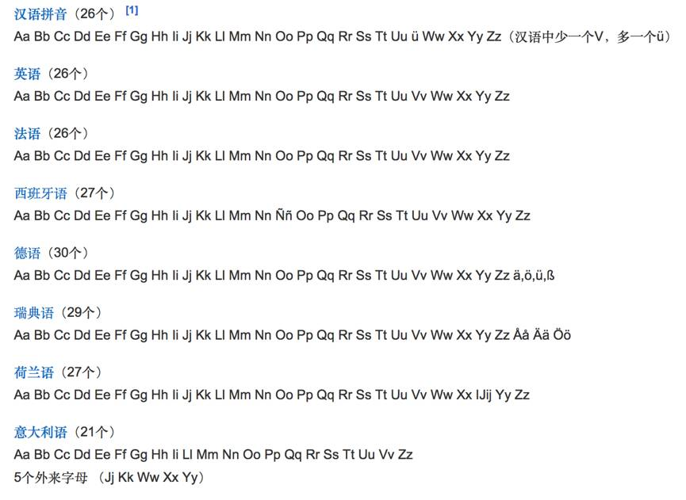
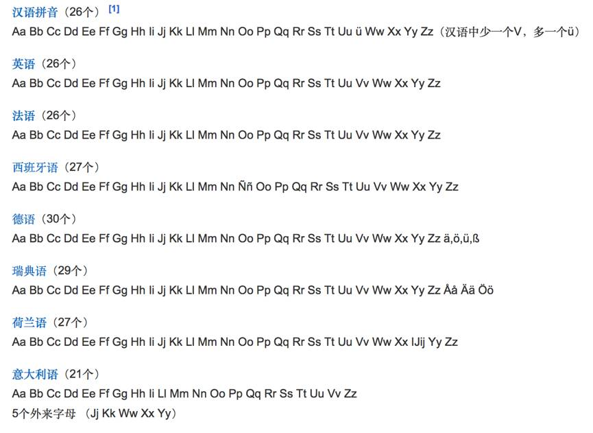

同义词
拼音（汉语拼音）一般指汉语拼音（汉字注音）
 1956年草案的声母表
1955年2月，中国文字改革委员会设立了“拼音方案委员会”，开始设计汉语拼音方案，提出了《汉语拼音方案（草案）》。1956年2月12日，中国文字改革委员会发表《汉语拼音方案（草案）》，公开征求意见。这个草案共有31个字母，其中有5个新字母（无点的i；长脚的n；带尾的z,c,s），以便实现“一字一音”，不用变读和双字母。草案发表后在全国范围内引起热烈的讨论，甚至海外华侨和留学生也提出了自己的意见。
1956年草案的声母表
1955年2月，中国文字改革委员会设立了“拼音方案委员会”，开始设计汉语拼音方案，提出了《汉语拼音方案（草案）》。1956年2月12日，中国文字改革委员会发表《汉语拼音方案（草案）》，公开征求意见。这个草案共有31个字母，其中有5个新字母（无点的i；长脚的n；带尾的z,c,s），以便实现“一字一音”，不用变读和双字母。草案发表后在全国范围内引起热烈的讨论，甚至海外华侨和留学生也提出了自己的意见。
 解读词条背后的知识
解读词条背后的知识
汉语拼音是中华人民共和国官方颁布的汉字注音拉丁化方案，是指用《汉语拼音方案》中规定的字母和拼法拼成一个现代汉语的标准语音即普通话的语音音节。于1955年-1957年文字改革时被原中国文字改革委员会（现国家语言文字工作委员会）汉语拼音方案委员会研究制定。该拼音方案主要用于汉语普通话读音的标注，作为汉字的一种普通话音标。1958年2月11日的全国人民代表大会批准公布该方案。1982年，成为国际标准ISO7098（中文罗马字母拼写法）。部分海外华人地区如新加坡在汉语教学中采用汉语拼音。2008年9月，中国台湾地区确定中文译音政策由“通用拼音”改为采用“汉语拼音”，涉及中文音译的部分，都将要求采用汉语拼音，自2009年开始执行。
汉语拼音是一种辅助汉字读音的工具。《中华人民共和国国家通用语言文字法》第十八条规定：“《汉语拼音方案》是中国人名、地名和中文文献罗马字母拼写法的统一规范，并用于汉字不便或不能使用的领域。”根据这套规范写出的符号叫做汉语拼音。
- 中文名
- 汉语拼音
- 外文名
- Chinese Pinyin、Hanyu Pinyin或Chinese Phonetic Alphabets
- 类 型
- 注音系统
- 语 种
- 现代标准汉语
- 创造者
- 中国文字改革委员会
- 使用地区
- 中国大陆，新加坡、马来西亚等
- 使用时期
- 1955年至今
- 标音字母
- 注音字母、拼音字母、国际音标
- 标音方法
- 音位标记法、音素标记法
- 标准法规
- 《国家通用语言文字法》
- 语音方案
- 《汉语拼音方案》
- 拼音系统
- 字母、声母、韵母、音节、声调
- 管理机构
- 汉字与汉语拼音研究室
汉语拼音古代注音
编辑我国在古代是使用汉字为载体，采用直音、反切等方法来给汉字注音。直音，就是用同音字注明汉字的读音，如果同音字都是生僻字，即使注了音也读不出来。反切，就是用两个汉字来给另一个汉字注音，反切上字与所注字的声母相同，反切下字与所注字的韵母和声调相同。周有光先生称反切是“心中切削焊接法”。这两种注音方法，用起来都不方便。
汉语拼音西文注音
编辑明朝末年西方传教士来中国传教，为了学习汉字，他们开始用拉丁字母来拼写汉语。
1605年，意大利耶稣会传教士利玛窦(Matteo Ricci,1552-1610)应用他和另外几位传教士拟订的用罗马字给汉字注音的一套方案写了4篇文章,送给当时的制墨专家程君房, 由程君房编入所著墨谱《程氏墨苑》中。4篇文章的前3篇都宣传天主教教义，由教会单独合成一卷，取名《西字奇迹》，复制本现存罗马梵蒂冈教皇图书馆（在中国，习惯上把上述 4篇文章称作是《西字奇迹》
这是最早用拉丁字母给汉字注音的出版物，比“小经”用阿拉伯字母给汉字拼音稍晚，“小经”（又名“小儿经”、“小儿锦”）大概是最早用字母文字给汉字拼音的尝试。
1626年，法国耶稣会传教士金尼阁在杭州出版了《西儒耳目资》，这是一本用拉丁字母给汉字注音的字汇。注音所用的方案是在利玛窦方案的基础上修改的。
利玛窦和金尼阁的方案是以“官话读书音”为标准设计的，适于拼写北京语音。这种新颖的拼音方法给中国学者以很大的启迪。明末音韵学家方以智说：“字之纷也，即缘通与借耳。若事属一字，字各一义，如远西因事乃合音。因音而成字，不重不共，不尤愈乎？”清代学者杨选杞说：“辛卯户糊口旧金吾期翁家，其犹子芸章，一日出《西儒耳目资》以示余，予阅未终卷，顿悟切字有一定之理，因可为一定之法”。但是，在两三百年间，利玛窦和金尼阁的方案只是在外国传教士中使用，没有在中国人当中广为传播。
1815年到1823年之间，在广州传教的英国传教士马礼逊编了一部《中文字典》，这是最早的汉英字典，字典中用他自己设计的拼音方案来拼写汉语的广东方言，实际上是一种方言教会罗马字。接着，在其他的方言区也设计了不同方言的方言教会罗马字。其中厦门的“话音字”1850年开始传播，仅在1921年就印刷出售五万册读物，直到新中国成立以前，大约还有十万人左右使用这样的方言教会罗马字。其他各地的方言教会罗马字，在南方的通商口岸传播，主要用来传教。
1867年，英国大使馆秘书威妥玛(Thomas F.Wade)出版了北京语音官话课本《语言自迩集》，他设计了一套拼写法，用拉丁字母来拼写中国人名、地名和事物的名称，叫做“威妥玛式”。
1931年到1932年间，有两个外国传教士提出了“辣体汉字”，这是一种根据《广韵》设计的、以音节为单位的汉语拉丁字母文字，同音字几乎都有不同的拼写法，拼写的是方言。
这些用拉丁字母拼写汉字的方案，为以后的汉语拼音运动提供了经验。
汉语拼音近代注音
编辑中国的汉语拼音运动是从清朝末年的切音字运动开始的。
鸦片战争以后，中国沦为半殖民地半封建社会，挽救民族危亡和振兴中华的热情，激发着一些爱国知识分子提出了教育救国的主张，梁启超、沈学、卢戆章、王照都一致指出，汉字的繁难是教育不能普及的原因，因此，掀起了一场“切音字运动”。
梁启超在《沈氏音书序》中指出，“国恶乎强？民智斯图强，民恶乎智？尽天下之人而读书，而识字，斯民智矣”。沈学说：“欧洲列国之强，……有罗马之切音也。人易于读书，则易于明理，理明，利弊分析，上下同心，讲求富强”。卢戆章说：“以切音以识汉文，……全国皆能读书明理，国家何致贫穷？人民何致鱼肉？”王照说：“列位啊，咱们个人都要点儿强吧，瞧瞧咱们中国都成什么样儿啦？”“中国政府非注意下层教育不可，欲去下层教育的障碍，非制一种沟通语言的文字使言文合一不可”。
卢戆章(1854-1928)是我国第一个创制拼音文字的人。1892年，他在厦门出版《一目了然初阶》，公布了他创制的“中国切音新字”，用拉丁字母及其变体来拼厦门音，声韵双拼，左右横写，声母在右，韵母在左，另加鼻音符号和声调符号，增加声母后还可兼拼泉州音和潮州音。他认为，汉字“或者是当今天下之文字之至难者”，而切音新字“字母与切法习完，凡字无师能自读”，这样一来，“省费十余载之光阴，将此光阴专攻于算学、格致、化学，以及种种之实学，何患国不富强也哉！”卢戆章并不要求废除汉字，他主张“切音字与汉字并列”。后来，他又编写了《中国字母北京切音教科书》和《中国字母北京切音合订》，用切音字来拼写官话。
继卢戆章的《一目了然初阶》之后，开始了延续20年的切音字运动。几乎每隔一二年就有新的切音字方案出现，如吴敬恒的《豆芽快字》，蔡锡勇的《传音快字》，沈学的《盛世元音》，王炳耀的《拼音字谱》，王照的《官话合声字母》，劳乃宣的《增订合声简字》等。这些切音字方案多数是声韵双拼式的汉字笔画式字母方案的，大多数只在小范围内传习，没有广泛推行，只有王照的官话字母和劳乃宣的合声简字推行较广。
王照(1859-1933)曾参加戊戌变法，失败后逃往日本，受日本假名的启发开始拟定汉语拼音字母，1900年秘密回国，以“芦中穷士”的笔名发表《官话合声字母》，采用汉字笔画作为字母基础，声韵双拼，并且主张以北京话为标准官话。他说：“京话推广最便，故曰官话；官者公也，公用之话，自宜择其占幅员人数多者”。他并不主张废除汉字，他说：“有力读书，有暇读书者，仍以十年读汉文为佳”，“汉文俗话并行，互相补助，为益更多”。1903年，王照在北京设立“官话字母义塾”，为了取得合法身份，他自首入狱，得到释放后全力推行他的官话字母，“十年之中，坚忍进行，传习至十三省境”，其精神令人钦佩。
劳乃宣(1842-1921)是音韵学家，他积极支持王照的方案，在官话字母的基础上补充方言字母，拟定了南京、苏州、福建、广东等方言的方案，统称“合声简字”。推广这种“合声简字”的成绩十分显著，“不识字之妇女村氓，一旦能阅读书报，能作函札，如盲者之忽而能视，其欣快几乎无可名状”。
切音字创制者的目的，虽然不想用它来代替汉字，但是他们希望切音字能够成为一种拼音文字，与汉字分工，并行使用。然而，他们的愿望没有实现。
在切音字运动中提出的拼音字母方案是多种多样、琳琅满目的，大致可以归纳为三大系：
①假名系：模仿日文假名，采用汉字部首作为拼音符号。1892年卢戆章的《一目了然初阶》一书中提出的“中国切音新字”，1901年王照的“官话合声字母”等都属于假名系。
②速记系：采用速记符号作为拼音符号。1896年到1897年两年间出版的蔡锡勇的《传音快字》、沈学的《盛世元音》、王炳耀的《拼音字谱》等书中提出的方案都属于速记系。
③拉丁系：采用拉丁字母作为拼音符号。1906年朱文熊的《江苏新字母》、1908年刘孟扬的《中国音标字母》和江亢虎的《通字》、1909年黄虚白的《拉丁文臆解》等书中提出的方案都属于拉丁系。
1913年2月，读音统一会在北京召开，会议的主要任务是“审定一切字的国音发音”和“采定字母”。会议开了三个多月。在这次会议上，审定了6500个汉字的读音，用各省代表投票的方法确定了“标准国音”；拟定了一套注音字母，共39个，这套字母采用汉字笔画式，字母选自古代汉字，音节采用声母、韵母和声调的三拼制，对双拼的反切法进行了改进，其用途仅在于标注汉字读音，不作为拼音文字。这套注音字母后来减为37个（声母12个，韵母13个，介母3个，比双拼切音字的方案中的字母几乎减少了一半。
会议对于注音字母的作用和地位问题进行了激烈的争论，最后决定注音字母的作用是给汉字注音，不能与汉字并行使用。黎锦熙明确指出，注音字母的职能是“伺候汉字，偎傍汉字”。
注音字母通过之后，搁置了五年，才于1918年由北洋政府教育部正式公布。1920年，全国各地陆续开办“国语传习所”和“暑期国语讲习所”，推广注音字母，全国小学的文言文课一律改为白话文课，小学教科书都在汉字的生字上用注音字母注音。北京还成立了注音字母书报社，印刷注音字母的普及读物，还办了《注音字母报》。从1920年到1958年，注音字母在我国使用了近40年的时间。这对于统一汉字读音、推广国语、普及拼音知识起了很大的作用。1930年，上层官员中有人觉得“注音字母”的名称不好，改称为“注音符号”，以强调这不是一种与汉字并行的文字。
周恩来在《当前文字改革的任务》中，高度评价了注音字母的作用。他说：“辛亥革命之后产生了注音字母，这是中国第一套由国家正式公布，并且在中小学校普遍推行过的拼音字母。注音字母对于识字教育和读音统一有过一定贡献。尽管今天看来，注音字母还有不少缺点（例如，作为各少数民族的共同基础和促进国际文化交流的工具，注音字母显然远不如拉丁字母），但是注音字母在历史上的功绩，我们应该加以肯定。对于近四十年来的拼音字母运动，注音字母也起了开创的作用”。
五四运动之后，于1918年，钱玄同在《新青年》四卷四期上发表《中国今后之文字问题》的文章，提出了“废孔学”、“废汉字”的主张。他说：“欲废孔学，不可不先废汉文；欲驱除一般人之幼稚的野蛮的顽固的思想，尤不可不先废汉文”；甚至说：“欲使中国不亡，欲使中国民族为二十世纪文明之民族，必以废孔学、灭道教为根本之解决；而废记载孔门学说及道教妖言之汉文，尤为根本解决之根本解决”；他提出：“废汉文之后”，“当采用文法简赅，发音整齐，语根精良之人为的文字Esperanto（世界语）”。
这显然是一种非常激进的言论，而且把汉语和汉字混为一谈，分不清语言和文字的区别，在学术上是错误的，因而受到了陈独秀的批评。陈独秀指出，语言和文字“此二者关系密切，而性质不同之问题”绝不能混淆，所以，是“仅废中国文字乎？抑并废中国语言乎”还值得研究，因此他提出了“先废汉文，且存汉语而改用罗马字书之”的意见。
这个意见得到了《新青年》同志的支持。钱玄同也接受陈独秀的意见，一同倡导国语罗马字，开始了国语罗马字运动。1923年，《国语月刊》出版了《汉字改革专号》，采用罗马字的呼声达到高潮，国语罗马字运动进入一个新的阶段。钱玄同发表《汉字革命》的论文，否定汉字，说“处处都足以证明这位老寿星的不合时宜，过不惯二十世纪科学昌明时代的新生活”，“所以汉字革命，改用拼音是绝对可能的事”，“惟有响响亮亮的说汉字应该革命！如此，则汉字改革的事业才有成功的希望”。他不满足于注音字母，认为“汉字根本改革之根本改革”应该采用罗马字母。
黎锦熙发表《汉字革命军前进的一条大路》，提出“词儿连书”的问题，对于这个重要的问题，进行了系统的研究。赵元任发表《国语罗马字的研究》，提出了“国语罗马字的草稿”，使用国际通用的拉丁字母，用字母表示音节的声调，不造新字母，不加新符号，并提出了系统的词儿连写规则。
1923年8月，教育部召开国语统一筹备会，决议组织“国语罗马字拼音研究委员会”。
1925年9月在北京的部分委员和一些语言学者自动组织“数人会”，提出了《国语罗马字拼音法式》。
1928年9月，大学院院长蔡元培正式公布《国语罗马字拼音法式》，作为“国音字母第二式”，用于给汉字注音和统一国语，“与注音字母两相对照，以为国音推行之助”。在国语罗马字运动中，出版了一些读物，如《国语留声片读本》等。
1932年教育部公布的《国音常用字汇》，用注音字母和国语罗马字两式对照。但是，国语罗马字始终没有走出知识阶层的圈子，没有在社会上普遍推行，它的影响远不如注音字母。
国语罗马字一直在台湾使用，1984年台湾发表国语罗马字修订草案，征求意见之后，于1986年1月28日正式公布，名称为《国语注音符号第二式》，改用于《汉语拼音方案》相同的符号标调法来表示声调。
汉语拼音新字运动
编辑在国语罗马字运动稍后，我国还开展了拉丁化新文字运动。中国的拉丁化新文字是20年代末30年代初在苏联创制的，其目的是在苏联远东的10万华工中扫除文盲，今后在条件成熟时，用拉丁化新文字代替汉字，以解决中国大多数人的识字问题。当时的苏联政府把在苏联远东地区的华工中扫除文盲也列为苏联本国的工作任务，于是，在苏联的中国共产党员瞿秋白、吴玉章、林伯渠、萧三等人与苏联汉学家龙果夫、郭质生合作，研究并创制拉丁化新文字。瞿秋白写成《中国拉丁式字母草案》，于1929年由莫斯科中国劳动者共产主义大学出版社出版，1930年，瞿秋白又出版了《中国拉丁化字母》一书，引起很大反响。1931年5月，苏联各民族新文字中央委员会科学会议主席团对中国拉丁化字母的方案进行了审定，并批准了这个方案。
1931年9月26日在苏联海参威召开的中国文字拉丁化第一次代表大会上，又通过了书面方案《中国汉字拉丁化的原则和规则》。其主要内容是：1.中国拉丁化新文字的原则（13条）；2.中国拉丁化新文字的规则（包括:①字母,②拼写规则,③写法规则）。拉丁化新文字是在国语罗马字的基础上制定的，在标调方式上与国语罗马字不同，国语罗马字对于所有的音节都要标声调，而拉丁化新文字规定：原则上不标声调，只是在极有必要或极易混同的情况下才标声调。例如，“买”和“卖”容易混同，“买”写为maai,“卖”写为mai。于是，拉丁化新文字运动正式开始，这个运动推动了中国语文现代化的历史进程。
拉丁化新文字的创制者和国语罗马字的创制者之间曾经进行过激烈的论战，前者叫做“北拉派”，后者叫做“国罗派”。后来他们都发现，两派在一些根本问题的认识上是一致的，只是在个别枝节问题上有分歧。周恩来在《当前文字改革的任务》中说：“拉丁化新文字和国语罗马字是中国人自己创制的拉丁字母式的汉语拼音方案中比较完善的两个方案。在谈到现在的拼音方案的时候，不能不承认他们的功劳”。
拉丁化新文字方案通过后，首先在华工中推行，出版书籍47种，刊印10多万册，许多华工学会了新文字，可以用新文字读书写信。
1933年，拉丁化新文字介绍到国内。1934年8月，上海成立了“中文拉丁化研究会”，出版介绍拉丁化新文字的书籍。接着，在北方和南方的一些大城市都先后成立了拉丁化新文字团体，甚至在海外华人中也成立了这样的拉丁化新文字团体，据统计，从1934年到1955年二十一年中，拉丁化新文字团体总共有300多个。
拉丁化新文字的传播还得到了文化教育界人士的热情赞助。1935年12月，蔡元培、鲁迅、郭沫若、茅盾、陈望道、陶行知等688位知名人士，共同发表文章《我们对于推行新文字的意见》，其中说：“我们觉得这种新文字值得向全国介绍。我们深望大家一齐来研究它，推行它，使它成为推进大众文化和民族解放运动的重要工具”。这是拉丁化新文字运动的一份革命宣言。
1936年9月22日，毛泽东看了这篇文章之后，亲自写信给蔡元培说：“读《新文字意见书》，赫然列名于首位者，先生也。20年忽见我敬爱之孑民先生，发表了崭然不同于一般新旧顽固党之簇新议论，先生当知见之而欢跃者绝不止我一人，绝不止共产党，必为无数量人也！”毛泽东对于当时新文字运动给以极大的赞赏。毛泽东对于新文字运动是积极支持的。他在1940年1月发表的《新民主主义论》中说：“文字必须在一定条件下加以改革，言语必须接近民众”。1941年1月，陕甘宁边区政府成立“新文字工作委员会”，正式宣布新文字与汉字有同等的法律地位。同年，在延安出版的《Sin Wenz Bao》（《新文字报》)第一期上，发表了毛泽东的题字：“切实推行，愈广愈好”；朱德也题了字：“大家把实用的新文字推行到全国去”。
在抗日战争的最紧急年代里，拉丁化新文字的传播形成一个与民族解放运动相结合的前所未有的群众性文化革命运动。这场运动不但没有被战争的炮火摧毁，反而在战火纷飞的年代里在全国各地到处开花结果。新文字在陕甘宁边区推行，效果很好。据吴玉章说，“延安县市冬学中，不到三个月，就扫除了1500余文盲，他们学会新文字，能写信、读书、看报，收到了很大的成绩”。
拉丁化新文字运动一直延续到1958年《汉语拼音方案》公布时为止，历时近30年。它对中国的文字改革事业，对制定和推广《汉语拼音方案》，都有着重大而深远的意义。
汉语拼音现代拼音
编辑在1951年，毛泽东就指出：“文字必须改革，必须走世界文字共同的拼音方向”。但是，究竟采用什么形式的拼音方案，他本人也是经过了反复斟酌的。毛泽东到苏联访问时，他曾经问斯大林，中国的文字改革应当怎么办；斯大林说，中国是一个大国，可以有自己的字母。毛泽东回到北京之后，指示中国文字改革研究委员会制订民族形式的拼音方案。同时，上海的新文字研究会停止推广北方拉丁化新文字，等待新方案的产生。
但这个意见却被后人曲解成汉字拼音化。后来为了消除人们的疑虑和理解歧义，毛泽东对文字改革的任务作了明确界定，指出文字改革的主要任务就是“简化汉字，推广普通话，制定和推行汉语拼音方案”！
1955年10月15日，全国文字改革会议在北京举行。叶籁士在发言中说：“从1952年到1954年这个期间，中国文字改革研究委员会主要进行汉字笔画式拼音方案的研究工作，经过了三年的摸索，曾经拟定几种草案，都放在《汉语拼音方案草案初稿》（汉字笔画式）里头”。这次会议上印发给代表们六种拼音方案的草案，有四种是汉字笔画式的，一种是拉丁字母式的，一种是斯拉夫字母式的。会议之后，当时的中国文字改革委员会主任吴玉章向毛泽东报告，他说，民族形式方案搞了三年，难以得到大家都满意的设计，不如采用拉丁字母。毛泽东同意采用拉丁字母，并在中央开会通过。
在中国制定拼音方案的时候，苏联已经不再搞拉丁化，改为搞斯拉夫化，把所有的拉丁化民族文字一律改成了斯拉夫字母。50年代，中国向苏联一边倒，有人主张采用斯拉夫字母，跟苏联在文字上结盟。苏联派到中国的语言学家谢尔久琴柯也提出使用斯拉夫字母的建议。据说，苏联的一位副总理来中国访问时，曾经向陈毅副总理说，希望中苏两国都采用相同的字母。陈毅副总理回答说，中国文化必须跟东亚和东南亚联系，东亚和东南亚都习惯用拉丁字母。这样，中国才没有采用斯拉夫字母。如果我国当时采用了斯拉夫字母，我们今天使用计算机将会遇到更多的困难。中国政府当时在字母选择上的决策，是非常正确的。
1956年1月20日，毛泽东在知识分子问题会议上，发表了赞成拉丁字母的讲话。他说，“吴玉章同志的发言讲的很好。关于文字改革的意见，我很赞成。在将来采用拉丁字母，你们赞成不赞成呀？我看，在广大群众里头，问题不大；在知识分子里头，有些问题。中国怎么能用外国字母呢？但是，看起来还是采用这种外国字母比较好。吴玉章同志在这方面说得很有理由。因为这种字母很少，只有二十几个，向一面写，简单明了。我们汉字在这方面实在比不上。比不上就比不上，不要以为汉字那么好。有几位教授跟我说，汉字是‘世界万国’最好的一种文字，改革不得。假使拉丁字母是中国人发明的，大概就没有问题了。问题就出在外国人发明，中国人学习。但是，外国人发明中国人学习的事情是早已有之的。例如阿拉伯数字，我们不是久已通用了吗？拉丁字母出在罗马那个地方，为世界大多数国家所采用。我们用一下，是否就大有卖国的嫌疑呢？我看不见得。凡是外国好的东西，对我们有用的东西，我们就是要学，就是要统统拿过来，并且加以消化，变成自己的东西。我们中国历史上，汉朝就是这么做的，唐朝也是这么做的。汉朝和唐朝，都是我国历史上很有名很强盛的朝代。他们不怕吸收外国的东西，有好的东西就欢迎。只要态度和方法正确，学习外国的好东西，对自己是大有好处的。”（转引自郑林曦《论语说文》）。
此期间，群众中也创制了不少的文字方案，寄到中国文字改革委员会。根据统计资料，从1950年到1955年8月31日全国文字改革工作会议为止，寄来的方案有655个，从1955年8月31日到1958年2月汉语拼音方案公布为止，寄来的方案有1000多个，从1958年2月到1980年文化大革命结束为止，寄来的方案有1667个。群众设计的各种各样的文字方案总共有3300多个。这种创制造文字方案的积极性，在中国文化的发展历史上是空前的。这充分说明了语言规划的社会性。
 1956年草案的声母表
1956年草案的声母表
1955年10月，国务院成立“汉语拼音方案审定委员会”，经过一年的工作，于1957年10月提出《修正草案》，11月1日由国务院全体会议第60次会议作为新的《汉语拼音方案（草案）》通过，提请全国人民代表大会审议，1958年2月11日，第一届全国人民代表大会第五次会议正式批准《汉语拼音方案》。1958年秋季开始，《汉语拼音方案》作为小学生必修的课程进入全国小学的课堂。《汉语拼音方案》是拼写规范化普通话的一套拼音字母和拼写方式，是中华人民共和国的法定拼音方案。这个方案吸取了以往各种拉丁字母式拼音方案，特别是国语罗马字和拉丁化新文字拼音方案的优点，它是我国三百多年拼音字母运动的结晶，是六十年来中国人民创造拼音方案经验的总结，比任何历史上一个拉丁字母式的拼音方案都更加完善和成熟。
1958年1月10日，周恩来在全国政协举行的报告会上作了《当前文字改革的任务》的报告，对毛泽东提出的文字改革三大任务进行了深入阐述。据胡乔木说明，这三项任务“是经毛主席提出，周总理在政协扩大会上宣布的”。报告明确说明了汉语拼音方案的用处，“是用来为汉字注音和推广普通话的，它并不是用来代替汉字的拼音文字”。而关于汉字的前途，报告指出："它是不是千秋万岁永远不变呢？还是要变呢？它是向着汉字自己的形体变化呢？还是被拼音文字代替呢？它是为拉丁字母式的拼音文字所代替，还是为另一种形式的拼音文字所代替呢，这个问题我们现在还不忙作出结论。但是文字总是要变化的。至于用什么方案，现在不忙把它肯定。关于汉字的前途问题，大家有不同的意见，可以争鸣，但这不属于当前文字改革任务的范围。”
毛泽东说汉语拼音方案的用处：“是用来为汉字注音和推广普通话的，它并不是用来代替汉字的拼音文字”
“至于用什么方案，现在不忙把它肯定。关于汉字的前途问题，大家有不同的意见，可以争鸣，但这不属于当前文字改革任务的范围。”
汉语拼音特点用途
《汉语拼音方案》有如下特点：
①只用国际通用的26个字母，不增加新字母；
②尽量不用附加符号（只用了两个附加符号）；
③尽量不用变读；
④采用i,u和隔音符号“'”来隔音；
⑤采用四个双字母zh,ch,sh,ng；
⑥采用四个声调符号来表示阴平、阳平、上声、去声四个调类；
⑦采用拉丁字母通用的字母表顺序，并确定了汉语拼音字母的名称。
周恩来在《当前文字改革的任务》的报告中说：“现在公布的汉语拼音方案，是在过去的直音、反切以及各种拼音方案的基础上发展出来的。从采用拉丁字母来说，它的历史渊源远则可以一直追溯到350多年以前，近则可以说是总结了60年来我国人民创制汉语拼音方案的经验。这个方案，比起历史上存在过的以及目前还在沿用的各种拉丁字母的拼音方案来，确实更加完善。”
《汉语拼音方案》自制订以来，得到迅速的推广和应用。主要有如下方面。
①用于给汉字注音：从1958年秋季开始，全国小学的语文课本采用汉语拼音给汉字注音，接着，中学教科书、字典、词典以及通俗读物、扫盲课本也采用汉语拼音注音。《人民日报》等用汉语拼音字母给难字注音。1958年10月，中央工商行政管理局和中国文字改革委员会联合发出通知，要求各种商标图样和商品包装上加注汉语拼音字母。邮电局名、铁路站名、气象站名、城市街道名也都使用汉语拼音标注。1982年6月19日国家标准局发布了国家标准《中文书刊名称汉语拼写法》，规定国内出版的中文书刊在封面、或首页、或封底、或版权页上加注汉语拼音书名、刊名。
②用于教学普通话：《汉语拼音方案》公布后，陆续出版了利用汉语拼音编写的普通话教材、读物、字表、字典、词典，促进了普通话的推广和普及。在对外汉语教学中，《汉语拼音方案》已经成为外国人学习汉语进行全面训练的不可缺少的工具。
③用于字典、词典的注音、排序，书刊的索引。75卷的《中国大百科全书》采用汉语拼音排序，正文的每一个条目都注上了汉语拼音。
④作为我国少数民族创制和改革文字的共同基础。我国已经有壮族、苗族、侗族、哈尼族、傈僳族、佤族、黎族、纳西族、土族等少数民族采用汉语拼音字母相一致的字母形式。
⑤用于不便使用或不能使用汉字的领域：《汉语拼音方案》为盲文的点字和聋哑人的手语的制定提供了依据。汉语拼音还可用于手旗通讯、灯光通信中，用同汉语拼音字母对应的手旗讯号或灯光符号来传递信息。在电子计算机输入汉字方面，拼音输入法是一种最为普及的输入方法。
1977年，联合国地名标准化会议决定采用《汉语拼音方案》作为拼写中国地名的国际标准。1978年9月，国务院转发了《关于改用汉语拼音方案作为我国人名地名罗马字母拼写法的统一规范的报告》。1982年8月1日，国际标准化组织(ISO)文献工作技术委员会决议采用汉语拼音作为世界文献工作中拼写中国专有词语的国际标准，标准号：ISO7098-1982。《汉语拼音方案》已经从中国标准发展成为国际标准。
汉语拼音是拼写汉语普通话的音标，不是字母文字。中华人民共和国官方已经完全放弃拉丁化字母文字方案，汉语拼音仅仅用于语音教学。
汉语拼音正词法则
为了适应社会各个领域应用《汉语拼音方案》的实际需要，我国从70年代开始，就着手研究汉语拼音正词法问题。
早在清末的切音字运动中，就已经开始考虑到拼音正词法问题。卢戆章在他的《一目了然初阶》一书中，已经用短横连接音节的方法实行了初步的分词连写。蔡锡勇的《传音快字》一书中，提出了“连书”的概念。沈学的《盛世元音》一书中，还把“连书”与词类问题结合起来讨论，主张按词类“缮写连书”。王照的《官话合声字母》、朱文熊的《江苏新字母》、刘孟扬的《中国音标字书》等书中，都用不同的方式表示了以词为单位的书写方法。但是，学者们对于以词为书写单位，还停留在初步的感性认识阶段，还没有总结出一套较为系统的分词连写规则，更谈不上建立正词法的理论。
在民国初年的注音字母运动中，由于这个运动的倡导者只是仅仅用注音字母来给汉字注音，因而对于分词连写的问题几乎没有涉及。所以，我们可以说，注音字母运动对于拼音正词法是没有什么贡献的。
1917年，陈独秀在《新青年》上提出了“文学革命”的口号。1918年钱玄同在《新青年》上发表了《中国今后的文字问题》一文，促进了人们对拼音化问题关注。1923年，《国语月刊》出版了特刊《汉字改革号》，发表了钱玄同的《汉字革命》、赵元任的《国语罗马字的研究》、黎锦熙的《汉字革命军前进的一条大路》等论文，开始了国语罗马字运动。1928年9月26日，由政府正式公布了国语罗马字方案，作为注音字母的第二式。这个方案用拉丁字母来拼写汉语，用字母来表示声调，考虑的比较周密，已经接近拼音文字。但是，没有很好地得到推广。
在国语罗马字运动中，黎锦熙明确地提出了“词类连书”的问题，并且拟订了“复音词类构成表”，提出了正词法的初步规则。1928年黎锦熙的《国语模范课本》和1929年赵元任的《最后五分钟》，通过拼音读物，对国语罗马字作了较为系统的试验。肖迪忱于1934年，孙先六于1936年曾经拟订了国语罗马字的分词连写条例，但都不够完整，不够系统，不够成熟。
30年代初期兴起了拉丁化新文字运动。这个运动一开始，就以集体名义制定了《中国汉字拉丁化的原则和规则》，于1931年9月在苏联海参威召开的中国新文字代表大会上通过。1934年到1937年间，上海、北京、天津等城市成立了新文字研究团体，出版了拉丁化新文字的书籍和杂志。1938年10月，成立了陕甘宁边区新文字协会。1941年，吴玉章发表了《中国拉丁化新文字的写法规则》一文，对拉丁化新文字的规则作了系统的总结。
在拉丁化新文字运动中，正词法问题受到了普遍的重视，许多学者对此作了深入的研究。林汉达发表过不少关于分词连写的文章，出版过第一本拼音文字的词表《国语拼音词汇》，倪海曙的《中国拉丁化新文字的写法》一文，提出了词的拼写法规则68条，对拉丁化新文字的正词法作了详尽而系统的总结。
在《汉语拼音方案》公布前后，学者们对于汉语拼音正词法展开了热烈的讨论。
彭楚南提出应该区分“理论词”和“形式词”。所谓“理论词”，就是在语法学上定义的词；所谓“形式词”，就是拼音文字连写在一起的单位。在汉语拼音正词法中，拼写的对象应该是“形式词”，而不应该是“理论词”。陆志韦出版了《汉语的构词法》一书，为汉语拼音正词法的研究提供了相当详尽的资料。周有光的《汉字改革概论》一书，对汉语拼音正词法的理论和方法作了全面的论述。在《汉语拼音方案》公布之后出版的《现代汉语词典》、《汉英词典》、《汉语拼音词汇》以及大量的拼音读物，也都采用了分词连写的办法，这些都为汉语拼音正词法的制定积累了多方面的经验。
1982年正式成立了汉语拼音正词法委员会。该委员会提出，汉语拼音正词法应该以现代汉语语法中定义的词作为正词法的拼写单位，同时也要照顾到阅读和理解的方便，并且要照顾到某些国际上拼写的习惯。该委员会同时也开始研制汉语拼音正词法的基本规则，参考过去个人研制的和集体草拟的正词法规则，《汉语拼音方案》公布以来出版的各种拼音读物，各种以《汉语拼音方案》为基础并以词为拼写单位的词书，各种信息处理用的汉语拼音分词连写的实践经验，广泛听取了个方面人士的意见，并请教育界、出版界、信息处理界和语文界的专家学者进行了讨论，又与有关单位协作，进行了10万多词的拼写试验。在这些工作的基础上，1984年10月，中国文字改革委员会发表了《汉语拼音正词法基本规则（试用稿）》。1988年7月1日，国家教育委员会、国家语言文字工作委员会发出《关于公布〈汉语拼音正词法基本规则（试用稿）〉的联合通知》。1996年1月22日，国家技术监督局发布《汉语拼音正词法基本规则》，把它当作国家标准。
《汉语拼音正词法基本规则》规定了用《汉语拼音方案》拼写现代汉语的规则。内容包括分词连写法、成语拼写法、外来词拼写法、人名地名拼写法、标调法、移行规则等。
为了适应特殊需要，同时提出一些可供技术处理的变通方式。
制定《汉语拼音正词法基本规则》的原则是：
①以词为拼写单位，并适当考虑语音、语义等因素，同时考虑词形长短适度。
②基本采取按语法词类分节叙述。
③规则条目尽可能详简适中，便于掌握应用。
词是语言中具有意义的能够自由运用的最小单位，汉语拼音正词法确定以词为拼写单位，这对于汉语拼音的应用，特别是在语言信息处理中的应用，是至关重要的。汉语拼音正词法成为了后来语言信息处理中制定现代汉语分词规范的重要依据。
汉语拼音政策调整
80年代中期，为了适应新时期语言文字工作的新形势，我国在拼音化的政策上做了调整。
1986年1月，当时的国家语言文字工作委员会主任刘导生在全国语言文字工作会议上的报告《新时期的语言文字工作》中指出：“关于推行《汉语拼音方案》。应该强调，《汉语拼音方案》是国家指定公布的法定标准。它的制定是历史经验的总结，公布之后已经在国内外广泛应用。《汉语拼音方案》有深厚的历史基础和群众基础，是一个科学实用的方案，我们应当努力推行，而不应当另起炉灶；要想用其它方案来取代，事实上难于办到。继续推行《汉语拼音方案》，是社会和科技发展的客观需要。今后要继续加强拼音教学，逐步扩大《汉语拼音方案》的应用范围，并研究、解决使用中的实际问题，如汉语拼音的同音字和同音词的区分，汉语拼音正词法的标准，汉语拼音技术应用中的标调法等。”
刘导生的这段报告，反映了我国政府对于拼音的基本政策，这个政策一直保持着，没有改变。十分明显，这个政策不同于新中国建立初期我国政府对于拼音的政策。
1951年，毛泽东曾经指示：“文字要在一定的条件下加以改革，要走世界文字共同的拼音化方向”。直到1984年2月1日中国文字改革委员会给国务院关于文字改革工作座谈会情况的报告里还说：“会议认为，我国在新的历史条件下，仍要坚持文字必须稳步进行改革的方针，走世界文字共同的拼音方向，但这并不影响汉字的继续存在和使用。”拼音化方向一直是我国语言文字政策的一个内容。
刘导生的报告完全没有提毛泽东指示的“拼音化方向”，只是谈到扩大拼音方案的应用范围。这意味着，我国政府放弃了毛泽东提出的“拼音化方向”的政策，汉语拼音不再被看作文字，而只是被看作是一种辅助汉字的工具。汉字是正宗的、法定的文字，而拼音不是法定的文字。因此，自1986年全国语言文字工作会议以来，拼音与汉字就不再处于平起平坐的地位，拼音的地位是从属于汉字的，它不再是准备将来代替汉字的拼音文字。这个调子明显地比毛泽东的调子低了许多。
在1986年5月31日国家教育委员会和国家语言文字工作委员会关于《全国语言文字工作会议纪要》中更进一步明确地指出：“在今后相当长的时期，汉字仍然是国家的法定文字，还要继续发挥其作用。《汉语拼音方案》作为帮助学习汉语、汉字和推广普通话的有效工具，进一步推行并扩大其使用范围，但它不是代替汉字的拼音文字，可以用于汉字不便使用或不能使用的方面。关于汉语拼音化问题，许多同志认为这是将来的事情，现在不忙于作出结论。”这个纪要明确地说明了拼音的地位和作用。因此，用不用拼音完全取决具体情况的需要，绝对不是强制的，而汉字是法定文字，汉字的使用才是强制的。
在全国语言文字工作会议期间，由于“拼音化方向”在政策上的变化，代表们对于“拼音化方向”问题进行了热烈的讨论。当时的国家语言文字工作委员会副主任陈章太在《全国语言文字工作会议的总结发言》中特别对于“拼音化方向”作了如下的说明：“关于拼音化方向问题，代表们在讨论中有两种不同的意见，这也反映了社会上对这个问题的不同认识。比较多的同志赞成工作报告不提这个问题，认为这符合中央倡导的实事求是、注重务实的精神，容易收到实效，有利于新时期语言文字工作的开展，同时也有利于推动文字改革工作。另外一些同志则认为报告中的有关表述，虽然是现实的，可行的，但总觉得对拼音化方向不加以正面表述，是一种后退，调子低了，可能对今后工作开展不利。我们对这两种意见进行了认真的严肃的考虑、研究，仍然认为工作报告中的表述是符合实际的，是积极而又稳妥的，是前进而不是后退的。实际上我们在会前关于这个问题倾听过社会上的意见和专家的意见，也倾听过许多负责同志的意见。我们相信现在这样的表述，将会得到国内外更加广泛的赞同和支持，将能团结更多的人来做好新时期的语言文字工作，并且更好地完成过去还没有完成的文字改革任务，从而更有效地为我国的现代化建设服务。这里我们向同志们作个说明，刘导生同志的工作报告中关于这个问题的提法，国家语委是事先请示过中央和国务院的领导同志的。大会期间同志们对这个问题的不同意见，我们也报告了党中央和国务院。昨天下午，国家语委接到了党中央和国务院对这个问题的批示，同意刘导生同志工作报告中对这个问题的表述。希望同志们能很好理解。当然，对这个问题有不同的认识，这是正常的，也是可以讨论的，但希望这种讨论不要影响集中力量做好我们当前要做的主要工作。”这样，就把当时我国政府的政策变化的背景说得更清楚了。
《中华人民共和国国家通用语言文字法》第一章第十八条规定：“国家通用语言文字以《汉语拼音方案》作为拼写和注音的工具。《汉语拼音方案》是中国人名、地名和中文文献罗马字母拼写法的统一规范，并用于汉字不便使用或不能使用的领域。初等教育应当进行汉语拼音教学。”这样，就从法律上确定了汉语拼音的地位和作用。汉语拼音在汉字教学中起了很好的作用。80年代初期开始的一项小学语文教学改革实验――“注音识字，提前读写”，简称“注提”。儿童首先用一个月左右学好汉语拼音，然后充分利用汉语拼音来帮助识字，从一年级开始就进行听说读写的全面训练，寓识字于读写之中，用汉语拼音阅读和作文，在阅读和作文中逐步增加汉字，最后达到全部用汉字阅读和写作。通过生动活泼的语言实践活动，促使学生在语言、思维、智力各个方面都得到和谐的发展。这项实验在全国进行，并编写了“注音识字，提前读写”的教材。
政府对拼音化的现行政策如上所述，但政府表示还可以讨论，所以，在我国的学者中，还有一些公开主张“双文制”(digraphia)的人，例如，周有光就主张实行“two-scriptsystem”（文字双轨制），冯志伟提出首先在计算机通信中实行“文字双轨制”，认为文字书写方式的改革应该先从信息科学做起来。政府对于这些持不同意见的学者并不干涉他们提出自己的意见和继续进行科学研究的自由。国家一级学会中国语文现代化学会受到国家教育部的大力支持，该学会的宗旨之一就是倡导和研究“拼音化”问题。我国政府这样宽松的政策，为“双文制”的研究提供了良好的条件。
关于双文制的想法，早在清朝末年的汉语拼音运动中就产生了，后来有许多、著名的学者都关心这个问题。郭沫若曾经说过：“我们可以预想到必然还有一段相当长的时期，让汉字和新造的拼音文字平行使用，在新文字的逐渐推广中而让汉字在大多数人民的日用中逐渐归于隐退，汉字的归于隐退，是不是就完全废弃了呢？并不是！将来，永远的将来，都会有一部分学者来认真研究汉字，认识汉字，也就跟我们今天有一部分学者在认真研究甲骨文和金文一样。”
茅盾说得更明白，他说：“我希望，至少我们的孙儿孙女这一代能够两条腿走路，既能用汉字写，也能用拼音字母写，听报告作笔记，用拼音字母写，会比汉字写得快。如果可能，还能用上拼音字母的打字机。这样该是多么幸福呢！我并不幻想，在不远的将来，就可以废除汉字（方块字）；然而即使在百年之内或在百年之后还要用汉字，让我们的子孙的一代能用‘两条腿走路’又有什么不好呢？”
郭沫若和茅盾生活的那个时代，计算机还没有普及，他们大约也没有使用过微型计算机，更没有可能通过计算机去访问互联网的网络、在网络上自由地漫游，但是，他们当时就已经慧眼独具地看到了双文制的好处，如果他们今天还健在，一定会举双手赞成在计算机通信中首先实行双文制的建议。
汉语拼音拼音表集
编辑汉语拼音字母表
字母 | 名称 | 字母 | 名称 | 字母 | 名称 | 字母 | 名称 | |||
|---|---|---|---|---|---|---|---|---|---|---|
ɑ | ㄚ | Hh | ㄏㄚ | Oo | ㄛ | Uu | ㄨ | |||
Bb | ㄅㄝ | Ii | ㄧ | Pp | ㄆㄝ | Vv | 万ㄝ | |||
Cc | ㄘㄝ | Jj | ㄐㄧㄝ | Qq | ㄑㄧㄡ | Ww | ㄨㄚ | |||
Dd | ㄉㄝ | Kk | ㄎㄝ | Rr | ㄚㄦ | Xx | ㄒㄧ | |||
Ee | ㄜ | Ll | ㄝㄌ | Ss | ㄝㄙ | Yy | ㄧㄚ | |||
Ff | ㄝㄈ | Mm | ㄝㄇ | Tt | ㄊㄝ | Zz | ㄗㄝ | |||
Gɡ | ㄍㄝ | Nn | ㄋㄝ |
v 只用来拼写外来语。
字母的手写体依照拉丁字母的一般书写习惯。
汉语拼音声母表
b ㄅ玻 | p ㄆ坡 | m ㄇ摸 | f ㄈ佛 | d ㄉ得 | t ㄊ特 | n ㄋ讷 | l ㄌ勒 | |
ɡ ㄍ哥 | k ㄎ科 | h ㄏ喝 | j ㄐ基 | q ㄑ欺 | x ㄒ希 | |||
zh(ẑ) ㄓ知 | ch(ĉ) ㄔ吃 | sh(ŝ) ㄕ诗 | r ㄖ日 | z ㄗ资 | c ㄘ此 | s ㄙ思 |
在给汉字注音的时候，为了使拼式简短 zh ch sh 可以省作 ẑ ĉ ŝ。
汉语拼音韵母表
ɑ
i ∣ 衣 | u ㄨ 乌 | ü ㄩ 迂 | |
ɑ ㄚ 啊 | ia ∣ㄚ 呀 | uɑ ㄨㄚ 蛙 | |
o ㄛ 喔 | uo ㄨㄛ 窝 | ||
e ㄜ 鹅 | ie ∣ㄝ 耶 | üe ㄩㄝ 约 | |
ai ㄞ 哀 | uɑi ㄨㄞ 歪 | ||
ei ㄟ 欸 | uei ㄨㄟ 威 | ||
ɑo ㄠ 熬 | iɑo ∣ㄠ 腰 | ||
ou ㄡ 欧 | iu ∣ㄡ 忧 | ||
ɑn ㄢ 安 | iɑn ∣ㄢ 烟 | uɑn ㄨㄢ 弯 | üɑn ㄩㄢ 冤 |
en ㄣ 恩 | in ∣ㄣ 因 | un ㄨㄣ 温 | ün ㄩㄣ 晕 |
ɑng ㄤ 昂 | iɑng ∣ㄤ 央 | uɑng ㄨㄤ 汪 | |
eng ㄥ 鞥 | ing ∣ㄥ 英 | ueng ㄨㄥ 翁 | iong ㄩㄥ 雍 |
ong ㄨㄥ 轰的韵母 |
（1） “知、蚩、诗、日、资、雌、思”等七个音节的韵母用 i，即：知、蚩、诗、日、资、雌、思等字拼作 zhi，chi，shi，ri，zi，ci，si。
（2）韵母ㄦ写成 er，用作韵尾的时候写成 r。例如：“儿童”拼作 ertong，“花儿”拼作 huɑr。
（3）韵母ㄝ单用的时候写成 ê。
（4）
- i 行的韵母，前面没有声母的时候，写成 yi（衣），yɑ（呀），ye（耶），yɑo（腰），you（优），yɑn（烟），yin（因），yɑng（央），ying（英），yong（雍）。
- u 行的韵母，前面没有声母的时候，写成 wu（乌），wɑ（蛙），wo（窝），wɑi（歪），wei（威），wɑn（弯），wen（温），wɑng（汪），weng（翁）。
- ü 行的韵母，前面没有声母的时候，写成 yu（迂），yue（约），yuɑn（冤），yun（晕）。ü 上两点省略。
- ü 行的韵母跟声母 j，q，x 拼的时候，写成 ju（居），qu（取），xu（虚），jue（觉），que（缺），xue（学），ü 上两点也省略；但是跟声母 l，n 拼的时候，仍然写成 lü（吕），lüe（略），nü（女），nüe（虐）。
（5）iou，uei，uen 前面加声母的时候，写成 iu，ui，un，如 niu（牛），gui（归），lun（论）。
汉语拼音拼音全表
编辑 汉语拼音全表
汉语拼音全表
| ||
汉语拼音增补规则
编辑汉语拼音声调
第一声，（阴平，调值55）
第二声，（阳平，调值35）
第三声，（上声，调值214）
第四声，（去声，调值51）
声调符号标在音节的主要母音上或音节后。轻声不标
例：用a标注声调：
阴平 ā ，阳平 á ，上声 ǎ ，去声 à ，轻声 a
妈 mā | 麻 má | 马 mǎ | 骂 mà | 吗 ma |
（阴平） | （阳平） | （上声） | （去声） | （轻声） |
汉语拼音隔音符号
①ɑ，o，e 开头的音节连接在其他音节后面的时候，如果音节的界限发生混淆，用隔音符号（'）隔开，例如：pi'ɑo（皮袄）。
汉语拼音大写规则
专有名词的首字母、姓氏和句首字母要大写。如：王维 Wáng Wéi、北京奥运会 Běijīng Àoyùnhuì；我们是学生 Wǒmen shì xuéshēng（凡例3.12）
汉语拼音发音方法
编辑a：发音时，嘴唇自然张大，舌放平，舌头自然放置，声带颤动。 |
o：发音时，嘴唇成圆形，微翘起，舌头向后缩，舌面后部隆起，舌居中，声带颤动。 |
e：发音时，嘴半开，舌位靠后，嘴角向两边展开成扁形，声带颤动。 |
i：发音时，嘴微张成扁平状，舌尖抵住下齿龈，舌面抬高，靠近上硬腭，声带颤动。 |
u：发音时，嘴唇拢圆，突出成小孔，舌面后部隆起，声带颤动。 |
ü：发音时，嘴唇成圆形，接近闭拢，舌尖抵住下齿龈，舌面前部隆起，声带颤动。 |
b：发音时，双唇紧闭，阻碍气流，然后双唇突然放开，让气流冲出，读音轻短。 |
p：发音时，双唇紧闭，阻碍气流，然后双唇突然放开，气流迸出成音。 |
m：发音时，双唇紧闭，舌后缩，气流从鼻腔出来，打开嘴，声带颤动。 |
f：发音时，上齿触下唇形成窄缝，让气流从缝中挤出来，摩擦成声。 |
d：发音时，舌尖抵住上牙床，憋住气流后突然放开，气流从口腔迸出，爆发成音。 |
t：发音时，舌尖抵住上牙床，憋住气后，突然离开，气流从口中迸出。 |
n：发音时，舌尖抵住上牙床，气流从鼻腔通过，同时冲开舌尖的阻碍，声带颤动。 |
l：发音时，嘴唇稍开，舌尖抵住上牙床，声带颤动，气流从舌尖两边流出。 |
g：发音时，舌根前部抵住软腭阻碍气流，让气流冲破舌根的阻碍，爆发成音。 |
k：发音时，舌根前部，抵住上软腭，阻碍气流，让气流冲破舌根的阻碍，迸发成音。 |
h：发音时，舌根抬高，接近软腭，形成窄缝，气流从缝中挤出，摩擦成音。 |
j：发音时，舌尖抵住下门齿，舌面前部紧贴硬腭，气流从窄缝中冲出，摩擦成音。 |
q：发音时，舌面前部贴住硬腭，气流冲破舌根的阻碍，摩擦成音。 |
x：发音时，舌尖抵住下门齿，舌面前部抬高靠近硬腭，形成窄缝，气流从缝中挤出，摩擦成音。 |
zh：发音时，舌尖上翘，抵住硬腭前部，有较弱的气流冲开舌尖阻碍，从缝中挤出，摩擦成音。 |
ch：发音时，舌尖上翘，抵住硬腭前部，有较强的气流冲开舌尖阻碍，从缝中挤出，摩擦成音。 |
sh：发音时，舌尖上翘，靠近硬腭前部，留出窄缝，气流从窄缝中挤出，摩擦成音。 |
r：发音时，舌尖上翘，靠近硬腭前部，留出窄缝，嗓子用力发音，气流从窄缝中挤出，摩擦成音，声带颤动。 |
z：发音时，舌尖抵住上门齿背，阻碍气流，让较弱的气流冲开舌尖阻碍，从窄缝中挤出，摩擦成音。 |
c：发音时，舌尖抵住上门齿背，阻碍气流，让较强的气流从缝中挤出，摩擦成音。 |
s：发音时，舌尖接近上门齿背，留出窄缝，气流从舌尖的窄缝中挤出，摩擦成音。 |
y：发音时，嘴微张成扁平状，舌尖抵住下齿龈，舌面抬高，靠近上硬腭，声带颤动。 |
w：发音时，嘴唇拢圆，突出成小孔，舌面后部隆起，声带颤动。 |
ai：发音时，先发 a 的音，然后滑向i，气流不中断，读音轻短。 |
ei：发音时，先发 e 的音，然后滑向i，气流不中断，嘴角向两边展开。 |
ui：发音时，u 的发音轻短，然后滑向 ei，嘴形由圆到扁。 |
ao：发音时，先发 a 的音，然后舌尖后缩，舌根向上抬，嘴形拢成圆形，轻轻的滑向 o。 |
ou：发音时，先发 o 的音，嘴唇渐收拢，舌根抬高，口型由大圆到小圆。 |
iu：发音时，先发 i，然后向 ou 滑动，口型由扁到圆。 |
ie：发音时，先发 i，再发e，气流不中断。 |
yue：发音时，先发 yu 的音，然后向e滑动，口型由圆到扁。 |
er：发音时，舌位居中发 e 的音，然后舌尖向硬腭卷起，两个字母同时发音。 |
an：发音时，先发 a 的音，然后舌尖逐渐抬起，顶住上牙床发n的音。 |
en：发音时，先发 e 的音，然后舌面抬高,舌尖抵住上牙床，气流从鼻腔泄出，发n的音。 |
in：发音时，先发 i 的音，然后舌尖抵住下门齿背，舌面渐至硬腭，气流从鼻腔泄出，发n的音。 |
un：发音时，先发 u 的音，然后舌尖抵住上牙床，接着发n的音，气流从鼻腔泄出。 |
yun：发音时，先发 yu 的音，然后舌头上抬，抵住上牙床，气流从鼻腔泄出，发n的音。 |
ang：发音时，先发 a 的音，然后舌根抵住上软腭，气流从鼻腔泄出，发后鼻音尾ng的音。 |
eng：发音时，先发 e 的音，然后舌尖抵住下牙床，舌根后缩抵住软腭发ng音，气流从鼻腔泄出。 |
ing：发音时，舌尖触下齿龈，舌面隆起至硬腭，鼻腔共鸣成声。 |
ong：发音时，先发 o 的音，然后舌根后缩抵住软腭，舌面隆起，嘴唇拢圆，鼻腔共鸣成声。 |
汉语拼音方案比较
编辑注音 符号 | 汉语拼音 方案 | 国语罗马字 拼音法式 | 国语注音符号 第二式 | 通用拼音 （华语） | 拉丁化 新文字 | 德式 烈·欧氏 | 美式 耶鲁 | 英式 威氏 | 法式 远东 |
ㄅ | b | b | b | b | b | b | b | p | p |
ㄆ | p | p | p | p | p | p | p | pʻ | p’ |
ㄇ | m | m | m | m | m | m | m | m | m |
ㄈ | f | f | f | f | f | f | f | f | f |
万 | v | v | v | - | - | - | - | - | - |
ㄉ | d | d | d | d | d | d | d | t | t |
ㄊ | t | t | t | t | t | t | t | tʻ | t’ |
ㄋ | n | n | n | n | n | n | n | n | n |
ㄌ | l | l | l | l | l | l | l | l | l |
ㄍ | g | g | g | g | g | g | g | k | k |
ㄎ | k | k | k | k | k | k | k | kʻ | k’ |
兀 | ng(ŋ) | ng | ng | - | - | - | - | - | - |
ㄏ | h | h | h | h | x | h | h | h | h |
ㄐ | j | j | j | j | g | dj | j | ch | k/ts |
ㄑ | q | ch | ch | c | k | tj | ch | chʻ | k’/ts’ |
广 | - | gn | gn | - | - | - | - | - | - |
ㄒ | x | sh | sh | s | x | hs | sy | hs | h/s |
ㄓ | zh(ẑ) | j | j | jh | zh | dsch | j | ch | tch |
ㄔ | ch(ĉ) | ch | ch | ch | ch | tsch | ch | chʻ | tch’ |
ㄕ | sh(ŝ) | sh | sh | sh | sh | sch | sh | sh | ch |
ㄖ | r | r | r | r | rh | j | r | j | j |
ㄗ | z | tz | tz | z | z | ds | dz | ts | ts |
ㄘ | c | ts | ts | c | c | ts | ts | tsʻ | ts’ |
ㄙ | s | s | s | s | s | s | s | s | s |
ㄧ | y | y | y | y | j | y | y | y | y |
ㄨ | w | w | w | w | w | w | w | w | w |
ㄩ | y | y | y | y | j | y | yw | y | y |
注音 符号 | 汉语拼音 方案 | 国语罗马字 拼音法式 | 国语注音符号 第二式 | 通用拼音 （华语） | 拉丁化 新文字 | 德式 烈·欧氏 | 美式 耶鲁 | 英式 威氏 | 法式 远东 |
帀 | i | y | r/z | ih | - | ï | r/z | ih/ŭ | e/eu |
ㄚ | a | a | a | a | a | a | a | a | a |
ㄛ | o | o | o | o | o | o | o | o | o |
ㄜ | e | e | e | e | e | ö | e | ê | ö |
ㄝ | ê[ea] | è | ê | - | - | - | - | - | - |
ㄞ | ai | ai | ai | ai | ai | ai | ai | ai | ai |
ㄟ | ei | ei | ei | ei | ei | e | ei | ei | ei |
ㄠ | ao | au | au | ao | ao | au | au | ao | ao |
ㄡ | ou | ou | ou | ou | ou | ou | ou | ou | eou |
ㄢ | an | an | an | an | an | an | an | an | an |
ㄣ | en | en | en | en | en | ën | en | ên | en |
ㄤ | ang | ang | ang | ang | ang | ang | ang | ang | ang |
ㄥ | eng | eng | eng | eng | eng | ëng | eng | êng | eng |
ㄦ | er | el | er | er | r | örl | er | êrh | eul |
ㄧ | i | i | i | i | i | i | i | i | i |
ㄧㄚ | ia | ia | ia | ia | ia | ia | ya | ia | ia |
ㄧㄛ | io | io | io | io | io | io | yo | io | io |
ㄧㄝ | ie | ie | ie | ie | ie | iä | ye | ieh | ie |
ㄧㄞ | (iai) | iai | iai | iai | iai | iai | yai | iai | iai |
ㄧㄠ | iao | iau | iau | iao | iao | iau | yau | iao | iao |
ㄧㄡ | i(o)u | iou | iou | iou | iou/iu | iu | you | iu | ieou |
ㄧㄢ | ian | ian | ian | ian | ian | iän | yan | ien | ien |
ㄧㄣ | in | in | in | in | in | in | in | in | in |
ㄧㄤ | iang | iang | iang | iang | iang | iang | yang | iang | iang |
ㄧㄥ | ing | ing | ing | ing | ing | ing | ing | ing | ing |
ㄨ | u | u | u | u | u | u | u | u | ou |
ㄨㄚ | ua | ua | ua | ua | ua | ua | wa | ua | oua |
ㄨㄛ | uo | uo | uo | uo | uo | o | wo | uo | ouo |
ㄨㄞ | uai | uai | uai | uai | uai | uai | wai | uai | ouai |
ㄨㄟ | u(e)i | uei | uei | uei | uei/-ui | ui | wei | ui/uei | ouei |
ㄨㄢ | uan | uan | uan | uan | uan | uan | wan | uan | ouan |
ㄨㄣ | u(e)n | uen | uen | un | uen/-un | un | wen | un | ouen |
ㄨㄤ | uang | uang | uang | uang | uang | uang | wang | uang | ouang |
ㄨㄥ | ueng/-ong | ueng/-ong | ueng/-ung | ong | ueng/-ung | ung | ueng/-ung | ung | ong |
ㄩ | ü(yu) | iu | iu | yu | y | ü | yu | ü | u |
ㄩㄝ | üe(yue) | iue | iue | yue | ye | üä | ywe | üeh | iue |
ㄩㄢ | üan(yuan) | iuan | iuan | yuan | yan | üan | ywan | üan | iuan |
ㄩㄣ | ün(yun) | iun | iun | yun | yn | ün | yun | ün | iun |
ㄩㄥ | iong | iong | iung | yong | yng | iung | yung | iung | iong |
汉语拼音拼音入英
编辑总部设在美国得克萨斯州的"全球语言监督机构" 发布报告称，自1994年以来加入英语的新词汇中，"中文借用词"数量独占鳌头，以5%-20%的比例超过任何其他语言来源。该机构主席帕亚克表示:"令人惊讶的是，由于中国经济增长的影响，中文对国际英语的冲击比英语国家还大。"
由汉语拼音而来的新词纷纷进入英语词汇系统。例如:“tuhao(土豪)”有望携手“dama(大妈)”以单词形式收录进《牛津英语词典》，这则消息引起了广泛的讨论和关注。据相关数据统计，《牛津英语词典》中有二百余个包含中文渊源的词汇。事实上，在日常生活中，许多汉语借词已经在英语词汇系统中占据了一席之地，成为其不可或缺的组成部分。
华中师范大学语言与语言教育研究中心姚双云教授认为，产生这一现象主要有3个原因。第一，英语开放度高，包容性强，借词庞杂;第二，科学技术的迅猛发展和文化交流的日益频繁，必然推动各种语言间的词语借用;第三，汉语国际地位日益提高，对英语的影响力日益增强，这也是最重要的一点。归根到底，汉语词汇的大量"出口"，其深层原因是中国在全球影响力的提升和关注度的提高。
中山大学周海中教授认为，以汉语为来源的英语词语是汉英两种语言接触的必然产物，也是中西文化融合的必然结果;随着中华民族与英语民族的交流交往日益频繁，来自汉语的英语词语及表达方式必然会越来越多。
[5]
词条图册
更多图册
-
-

汉语拼音和键盘字母是什么关系？
为什么键盘上的26个英文字母能完美的重合中国的汉语拼音，每个声母韵母都能找到对应的英文字母？估计这位朋友想知道的是，键盘上的字母和汉语拼音重合是意外的巧合还是命运的必然。
2017-08-15169 -
汉语注音自古有之，古时候叫直音和反切，原来是这样拼读的
汉语拼音是中华人民共和国官方颁布的汉字注音拉丁化方案，于1955年-1957年文字改革时，原中国文字改革委员会、汉语拼音方案委员会研究制定。1958年2月11日的全国人民代表大会批准公布该方案。
2018-09-0498 -
大国崛起？BBC教世界人民读“Wang Hong”
2017-06-3036 -
汉语的拼音为什么不好用？
北京大学、清华大学还是厦门大学的英文名为什么那么奇特。正是因为他们都采用了邮政式拼写。其中 Tsinghua 为老官话拼写的“清华”，Amoy 为闽南语的“厦门”。
2019-10-2328
-

- 参考资料
-
- 1. 学者新论：汉语拼音运动的历史回顾 ．人民网全国党建云平台[引用日期2015-08-15]
- 2. 中国社会科学院语言研究所词典编辑室．《现代汉语词典（第6版）》．北京：商务印书馆，2012年：1787
- 3. 中国社会科学院语言研究所词典编辑室．《现代汉语词典（第6版）》．北京：商务印书馆，2012：附录：1787-1790
- 4. 中国社会科学院语言研究所词典编辑室．《现代汉语词典（第6版）》．北京：商务印书馆，2012年：凡例·第4页·3.12、313
- 5. 这些年，我们“出口”的汉语词汇 ．新华网．2013-12-02[引用日期2017-01-19]
.png)